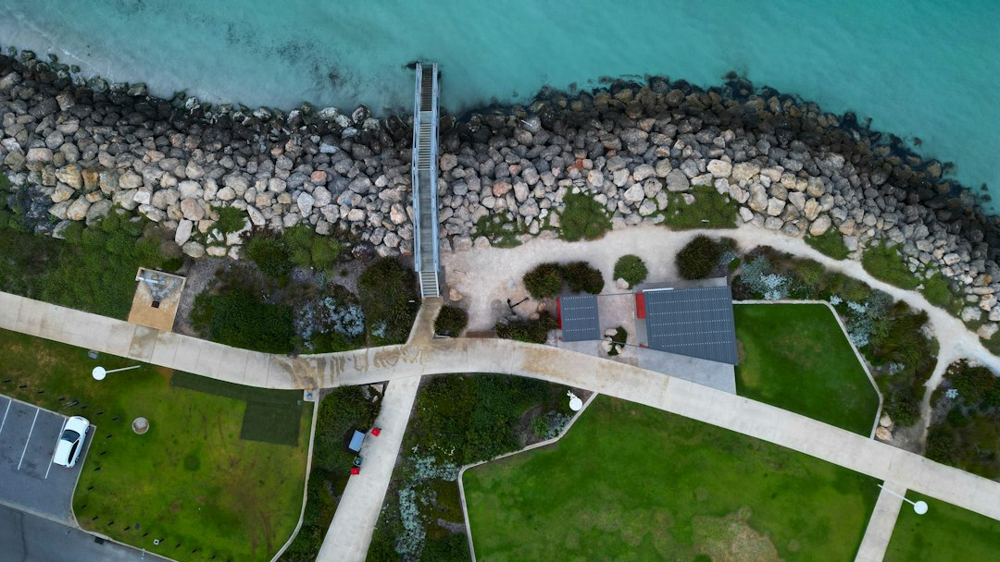

For Perth retaining projects, the sourced decision points are material, drainage, engineering and approval. The published guide identifies limestone block and post and panel systems as the two common local choices, and says walls retaining more than 0.5 metres of ground generally need a local government building permit. Boundary walls, adjoining land impacts, surcharge and links to other building work can also change the approval pathway.
For homeowners comparing retaining walls perth options, the useful starting point is how the block, wall height, drainage and approval pathway fit together before quotes are requested.
Retaining Walls Perth Explained
Retaining Wall Perth frames Perth retaining work around two frequent choices, limestone block and post and panel precast concrete. Before comparing finishes, identify what the wall must do: hold a garden terrace, support a driveway edge, sit on a boundary, replace a failed section or form part of wider building work.
That first description shapes the quote. A useful brief gives the retained height, the wall's position on the block, access limits, visible movement or cracking, and whether another structure, fence or neighbouring land is involved. For a related editorial overview, see this retaining wall Perth overview.
- Measure or estimate the height being retained, not just the visible face.
- Say whether the wall is new work, replacement or repair.
- Flag boundaries, driveways, terraces and adjoining land early.
Who This Applies To
This guide is for Perth owners planning residential retaining, commercial retaining, repair or replacement work, especially where the site sits near a boundary, driveway or sloped section of land. It is also useful when comparing limestone, post and panel, besser block, timber sleeper, rock or boulder options before asking for prices.
Local conditions matter when they change the build question. The published guide distinguishes the sandy Swan Coastal Plain, limestone-backed blocks and granite-outcropped Darling Range hills. Those details do not decide the design by themselves, but they help explain why a builder may ask about drainage, access, wall height and whether engineering is needed.
Choosing A Wall System
Limestone block is presented as a natural fit for Perth's sandy, limestone-backed blocks and local streetscape. Post and panel, also described as twin-side, uses posts with precast concrete panels slotted between them, and is described as a fast, consistent-finish system for boundaries and driveways.
Other materials serve narrower roles. Timber sleeper walls are positioned for gardens, terraces and low boundary retaining. Rock and boulder walls suit hills blocks where a rugged, free-draining finish is wanted. Besser block is described as core-filled and steel-reinforced, suited to taller engineered walls and rendered finishes.
- For a boundary or driveway, ask how post spacing, panel choice and drainage will be handled.
- For limestone, ask whether natural or reconstituted block is being proposed.
- For repairs, ask whether the issue appears to be drainage, footing condition, material condition or movement.
Permits And Engineering Checks
The published guide says a local government building permit is generally needed once a wall retains more than 0.5 metres of ground. It also says a wall of any height can need approval if it is tied to other building work, affects or protects adjoining land, or affects a boundary wall or dividing fence.
For engineered walls, the guide refers to AS 4678 and WA registered building engineering practitioners. It also refers to the Building Act 2011 (WA), Building Regulations 2012 and Residential Design Codes for approval and planning context. Ask who checks the permit pathway, who arranges engineering if required, and what documents the local government may expect. The guide notes that Wanneroo and Melville may count combined tiered wall height toward the 0.5 metre figure, so stepped designs deserve early confirmation.
Drainage And Repair Clues
Drainage is treated as part of the wall system, not a cosmetic extra. The guide names ag-drain, gravel and geofabric as common subsoil drainage elements behind walls, and links drainage assessment to wall performance in Perth's winter-saturated sandy ground.
For damaged walls, the guide avoids a flat price because the failure mode changes the work. A leaning timber sleeper section is a different job from a bulging block wall that may need partial demolition and rebuilding. Ask for an assessment of drainage, footing condition and material state before comparing repair quotes.
What To Put In The Quote Request
The enquiry form asks for name, phone, email, suburb or postcode and project details. Make the project details specific: approximate wall height, location on the block, nearby fence or driveway, access constraints, preferred material and whether the work is new, replacement or repair.
Ask whether the quote includes construction only, or also permit guidance, engineering coordination, demolition, disposal and drainage work where relevant. That distinction helps compare offers without mistaking a narrower build price for the complete pathway.
- Describe the site. Note the wall location, retained height, boundary position, access and whether the work is new, replacement or repair.
- Ask about approval. Confirm whether height, boundary issues, adjoining land or associated building work may trigger permit checks.
- Compare systems. Discuss limestone, post and panel, besser block, timber sleeper or rock and boulder against the site conditions.
- Check drainage scope. Ask whether ag-drain, gravel and geofabric are included where appropriate.
- Clarify inclusions. Separate construction, engineering, permit support, demolition, disposal and repair assessment.
| Option | Best-fit question | Published guide note |
|---|---|---|
| Limestone block | Does the site suit a local limestone appearance? | Presented as a common fit for sandy, limestone-backed Perth blocks. |
| Post and panel | Is the wall for a boundary or driveway? | Presented as a fast system using posts and precast concrete panels. |
| Besser block | Is the wall taller, engineered or rendered? | Described as core-filled and steel-reinforced. |
| Timber sleeper | Is the job garden-scale or low retaining? | Positioned for gardens, terraces and low boundary work. |
| Rock and boulder | Is a rugged hills finish wanted? | Described as suited to Perth hills blocks and granite-outcropped sites. |
Common questions
Do Perth retaining walls always need council approval? No. The published guide says approval is generally needed once a wall retains more than 0.5 metres of ground, but walls of any height may need approval in boundary, adjoining land or building work situations.
Is limestone better than post and panel? The guide does not rank one as always better. Limestone is framed as a local fit for sandy, limestone-backed blocks, while post and panel is framed as fast and consistent for boundaries and driveways.
Can a damaged wall be priced from photos alone? Photos can start the conversation, but the guide says repair cost depends on the failure mode. Drainage, footing condition and material state need assessment before an accurate repair quote.
What should I ask before accepting a quote? Ask what material is proposed, how drainage is handled, whether engineering or permit support is included, and whether demolition, disposal or repair assessment are part of the price.
This guide covers Perth retaining wall material choice, permit checks, drainage questions, repair assessment and quote preparation.